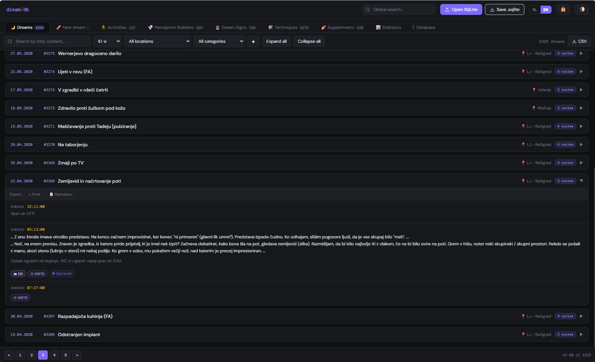
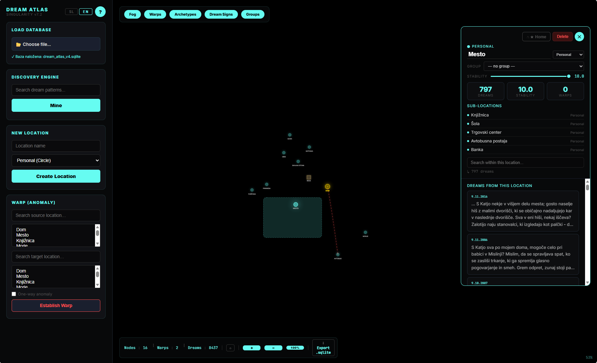
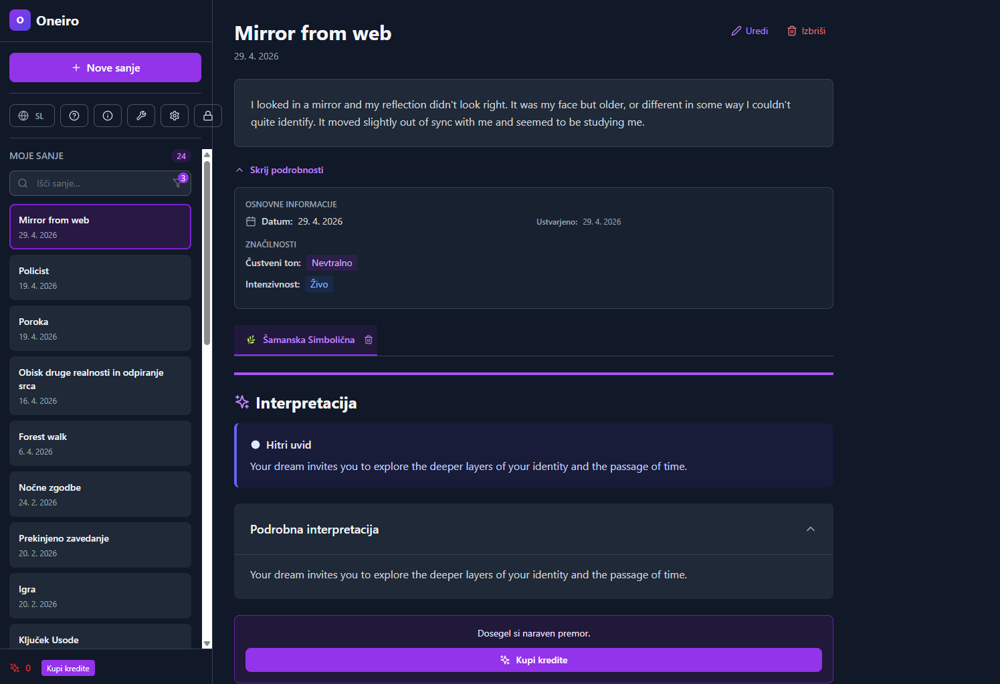
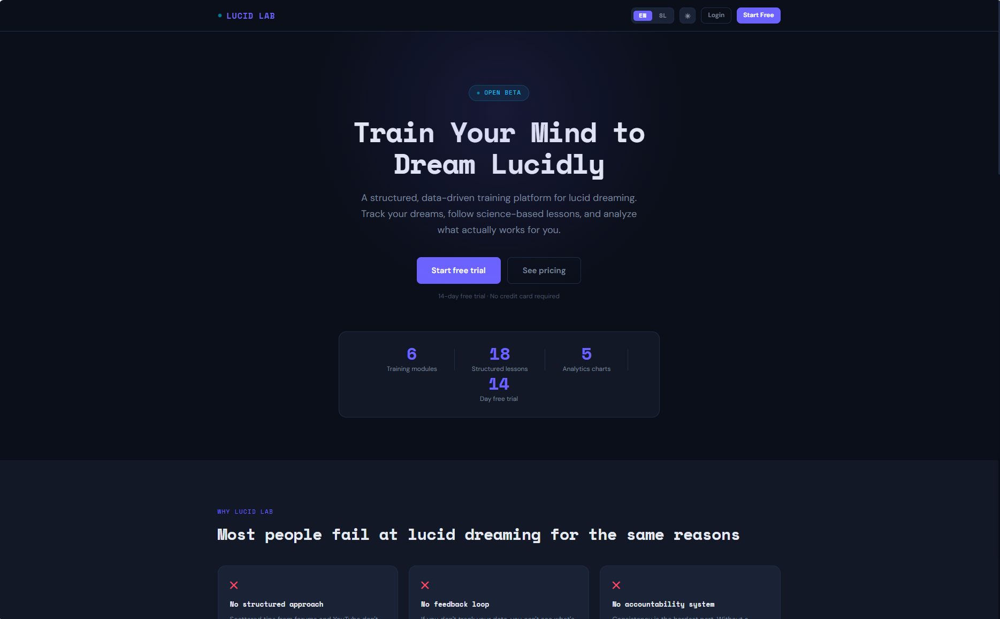
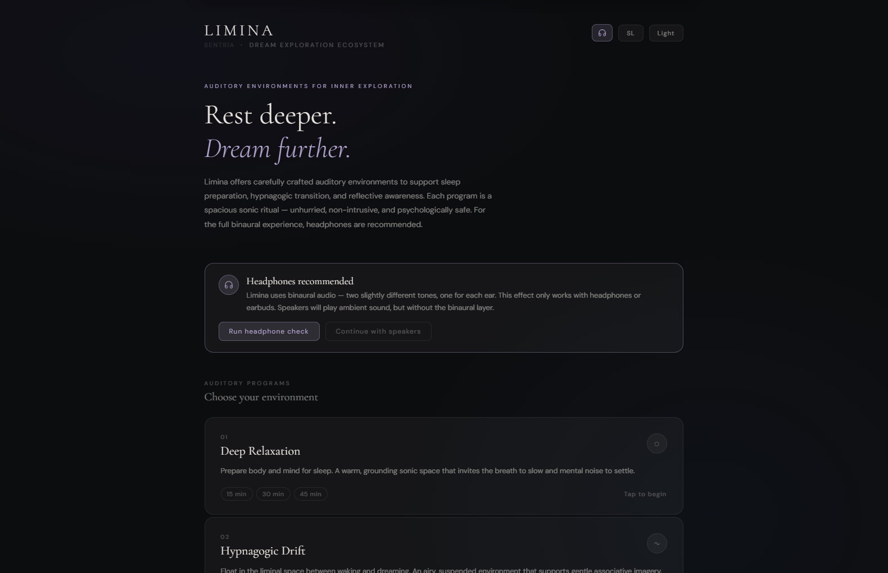
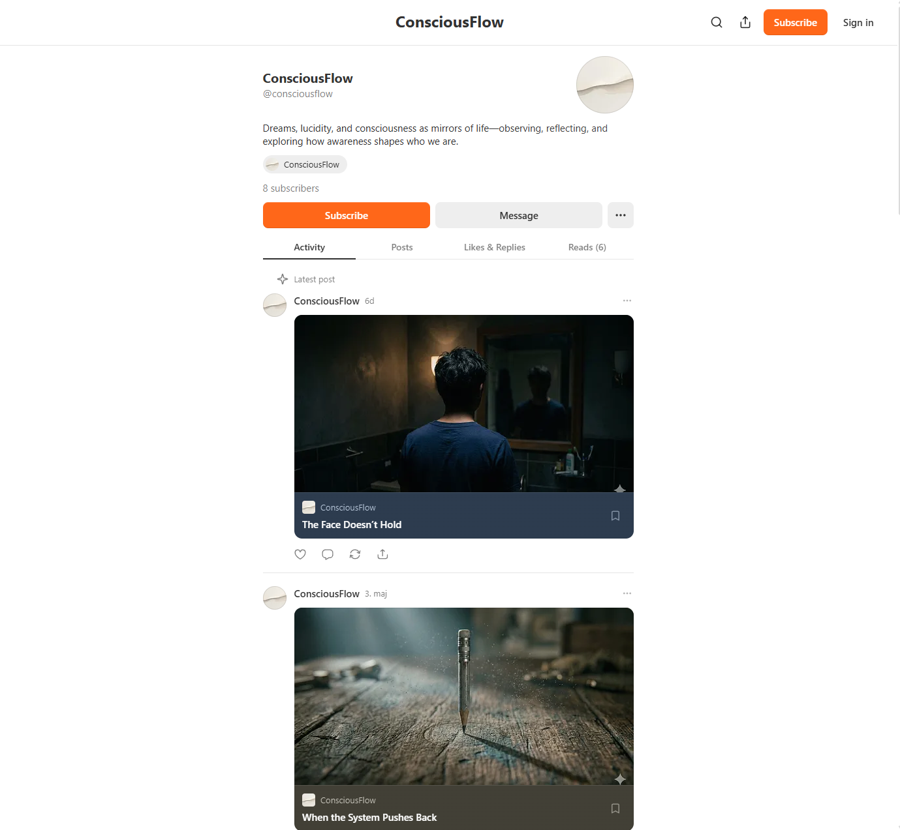

Independent systems,
shared continuity

A local-first dream journaling system designed for long-term dream tracking, detailed analytics, and personal symbolic exploration. Built around privacy, continuity, and full ownership of your dream archive.

A visual dream mapping system that transforms recurring dream locations into interconnected symbolic landscapes. Explore your inner world through evolving spatial continuity and dream geography.

A lightweight dream journal focused on fast capture and reflective AI-assisted interpretation. Explore your dreams through psychological, Jungian, and symbolic perspectives directly in your browser.

An interactive gateway into dream symbolism featuring interpretations of common dream motifs and AI-assisted reflection tools. Designed for accessible and intuitive dream exploration.

An experimental lucid dreaming dashboard combining dream journaling, custom analytics, and structured learning tools to support lucid dreaming practice and self-observation.

An experimental audio environment focused on deep relaxation, hypnagogic drift, and lucid dreaming support through atmospheric sound design, binaural beats, and immersive sleep-oriented audio.

A reflective journal exploring dreams, lucid dreaming, symbolism, and consciousness through over twenty years of personal research. The philosophical and narrative foundation of the Sentria ecosystem.